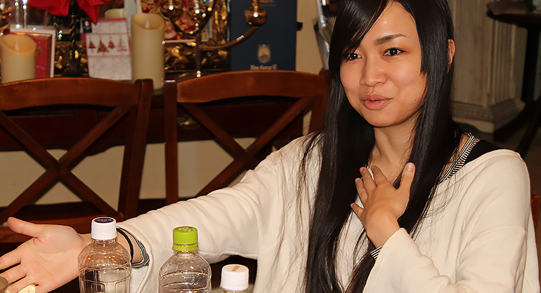
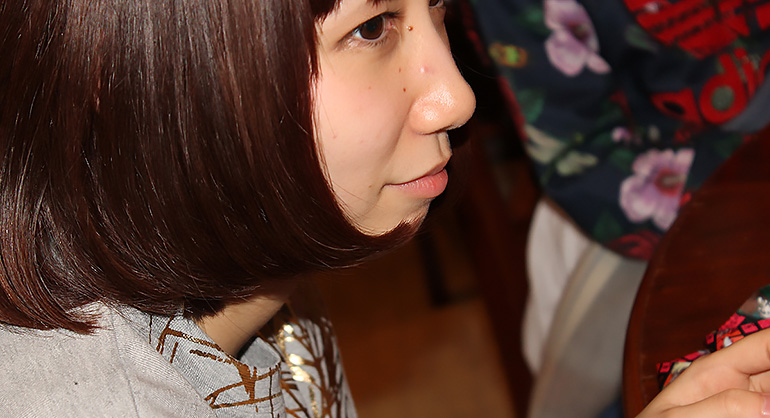
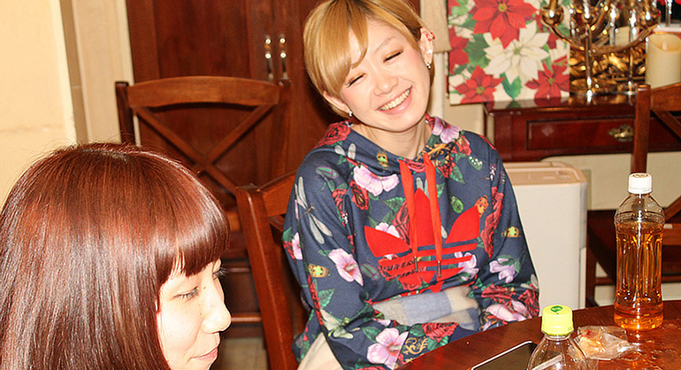
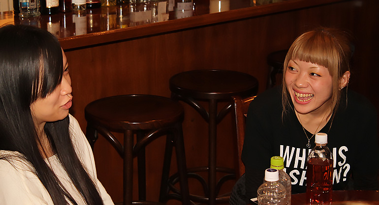
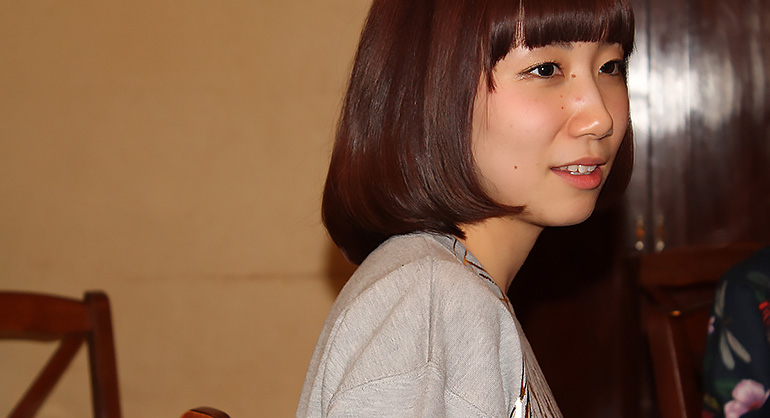
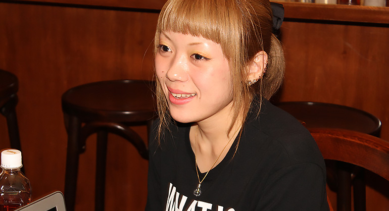
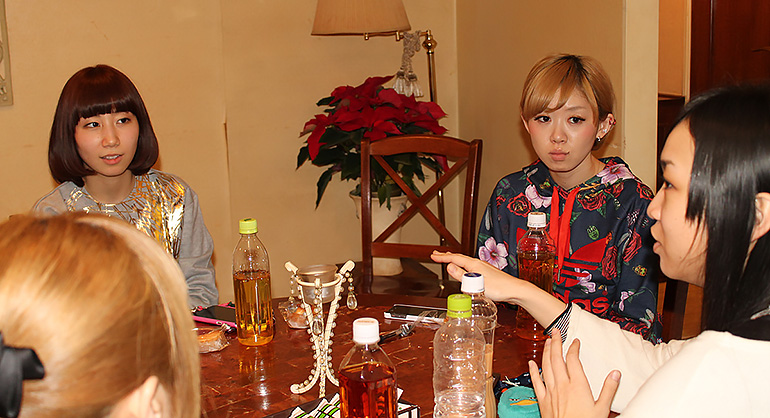
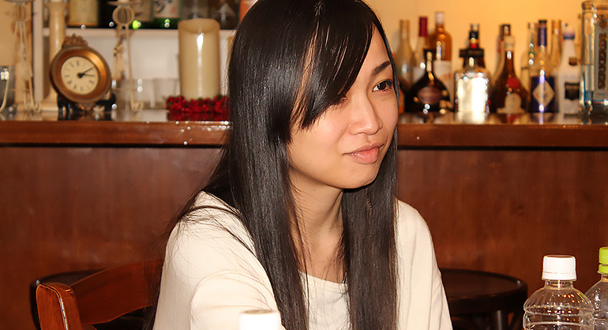
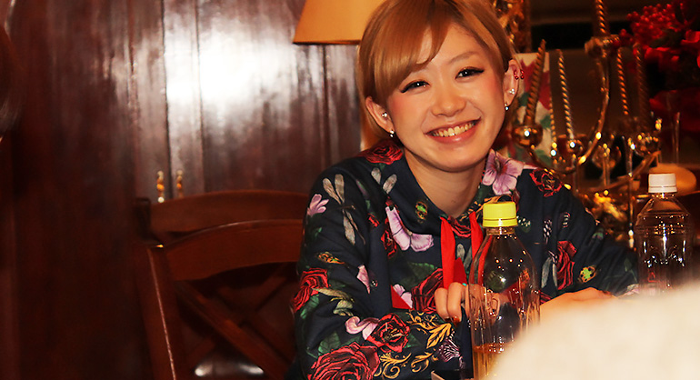
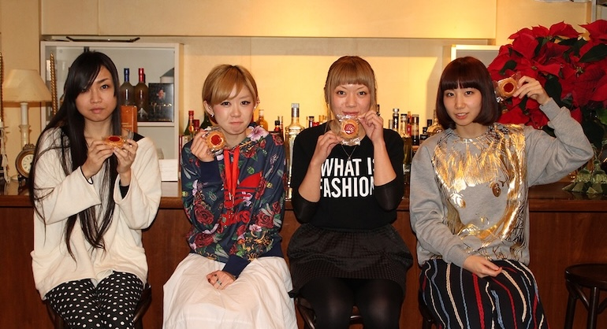

劇団、月刊「根本宗子」が、年末から来年にかけて少なからず界隈を騒がせることになるかもしれない。そんな期待感がある。人間の嫌な部分をコミカルに描く作風で、当て書きによるキャラ造形に定評があるが、物語を物語として成立させる力があって、そのベースには観る者をいかに退屈させず楽しませたいという精神がある。主宰である根本宗子がいま信頼を置く俳優が、唯一の劇団員でもある梨木智香。そして大竹沙絵子、あやかの３人。公表されている予定を眺めるだけで、来夏までに展開する活動において、彼女達が重要なキーとなってくることは想像に難くない。年２回の本公演の他に、四ッ谷に在る「バー夢」にて約２年間、定期的に行ってきた月刊「根本宗子」のバー公演。その新作『あの子と旅行行きたくない』の稽古中の「バー夢」にお邪魔して、現在の４人の胸中について話を聞いた、その一部始終をお届けする。
今回の月刊「根本宗子」のバー公演『あの子と旅行行きたくない』に出演される４人なんですけど、それだけではなく、年末から来年６月までの月刊「根本宗子」の活動のキーになってくる方達なのかなと思っていて。
根本：
いつも大体、テンポ重視の芝居の時はこの４人が支えてるんですよ。いろんな女優さん達と２年くらいやってきて、テンポ芝居では一人崩れちゃうと全体が崩れちゃうってところがあって、毎公演、もちろん納得いってるんですけど、次は節目の第10回公演（『もっと超越したところへ。』）ってこともあって、悔しい思いをするのを少しでも避けたいので、来年の半ばまでは女優はいつものこの４人でやろうと思ったんです。
信頼してるということですよね、この３人を。
根本：
はい。一緒にやってきた本数が長い人達ですね。
梨木：
宗子ちゃんのやり方というかテンポを理解してて、絶対に間違わない人達なんです。だから、今年の夏の『嫌いな女の名前、全部貴方に教えてあげる。』では、前半のテンポ芝居の主軸パートに、私も大竹さんも入ってなかったから、それで大変さもあったので。
根本：
大竹さんはそれに出演もしてないから（笑）
大竹：
私は出てなかったです（笑）
（笑） 本公演で４人が揃ったのは、２年前の『今、出来る、精一杯。』と、再演の『中野の処女がイクッ』（初演はあやかさんが未出演）ですよね？
根本：
そうですね。（ファン感謝イベント的な位置付けの）お祭り公演では揃ってますけど。
そうすると、本公演以外ではこの４人はレギュラーみたいな存在ですか？
根本：
でも、この前の『婆VS女子高生』は、２人（大竹、あやか）は出てなくて、私も作・演のみだった。出てたのは梨木さんだけでした。だから、梨木さんが出てないバー公演っていうのがないですね。梨木さんが団員になってからは特に。
梨木：
団員でもない頃から、ずっとやってました、私。バー公演は。
大体、作品についての取材をすることが多いんだけど、今回のバー公演の内容はまだ分かっていないので。
根本：
私達もまだ分かってないです（笑）
一同：
（笑）
まだ台本あがってないからね（笑） ということで、これまでの活動や歴史だったり、差し支えない程度で私生活なんかも聞けたらな、と思っていて。
根本：
差し支えあるような私生活送ってないです（笑）
梨木：
（あやかさんに）差し支えある？
あやか：
何でも大丈夫です（笑）
よろしくお願いします（笑） 根本さん、私生活をところどころで切り売りしたりもしてるじゃないですか？
根本：
切り売りキャラみたいに言いますけど、さほどでもないですからね（笑） 特にバー公演は切り売ってないですよ。
梨木：
バー公演だったら、私の方がしてるかも。
根本：
みんなの方が切り売ってるかも。

基本は当て書きですからね。じゃあ皆さんのを頂いてるのか。
根本：
頂いてるのは結構あります。本当に人に話したくないことは言われてないと思うから、知らないことももちろんあるけど。
それはそうですよね。言えないようなことあります？
あやか：
根本さんにですか？ 全部言ってるかも。
根本：
あーぽんは普段からね。公演がない時にみんなで遊びに行こうとかはないから。個々で用事があってお茶したりはあるけど。
梨木：
でもご飯行ったりするよ。
根本：
４人でどっか行ったりするとかはない。
梨木：
それはないよ。気持ち悪い（笑）
大竹：
でも行く人達だっていますよ。行ってそうな劇団、思い浮かぶ。
一同：
（笑）
梨木：
私は、長井短とは常に一緒にいます。すっごく仲いいんで。
そこは仲がいいんですね。長井（短）さんと、あと尾崎（桃子）さんもよく一緒にやられてますけど、劇団にとってまだゲスト感がある？お芝居に関して。
根本：
一緒にやる役者としては好きだけど、単純に再現性があるかないかで。バー公演は同じ事が何回も出来るか出来ないかなので。再現性が100に近い人達が今ここにいる人達で。回によってブレがある、長井さんとか桃ちゃんは。
梨木：
あと若いからね。Jr.みたいなもんだよね。
根本：
ジャニーズJr.ね。うちらがTOKIOくらいですかね（笑）
大竹：
TOKIO！（笑）
（笑）でも、長井さんと尾崎さんは飛び道具的じゃないですけど、特徴的な役をやっていて印象にも残ってます。
根本：
配役が難しい。やれることが限られてくるから、面白くなることしかまだ振れないっていうところがある。二人に限らずもちろんそれは自分にだってあるし、他のみんなにもあるけど、出来ないことを振って苦労するよりも出来ることを振って、面白くする方が建設的だってことにここ２年くらいで気付いたので。
バー公演の経緯は、前に少し聞きましたけど。
根本：
経緯はあれです。赤字になった公演があって、バイトして返すのが嫌だったからって理由が１つと、あとお客さんを増やしたかったから。その当時、ももクロが流行ってて。「週末ヒロイン」って、週末だけ公演するの演劇でやったら面白いかなって、梨木さんに相談したんです。週末ヒロインになりたかったから（笑）
「バー夢」はどうやって探したんですか？
根本：
知り合いのバーを借りてやってます。
梨木：
私は本公演よりバー公演の方が楽しい。

本公演って、内容が重厚じゃないですか。ズッシリくるというか。
根本：
だからバー公演はライトなんです。女の子だけでコメディをやってみたいって始めたから。高いお金を払ってつまらなかったら嫌じゃないですか。本公演の前のお試しっぽい感じで。バー公演は2000円とかで観られるから。
作風を変えてるって意識はあるんですね。
根本：
でも、この前の公演『嫌いな女の名前〜』の1階のセット部分のお芝居がバー公演って感じで、初めてバー公演っぽいことを本公演でやったんです。
梨木：
そのパートを任せられるこの３人（根本、梨木、大竹）がその場面にいなかったから、あーぽんに全部任せて、間とか保つ役を全部担ってたんです。
何であの公演に、大竹さんは出てなかったんですか？
根本：
役がなかったのもあるけど、その前の『夢も希望もなく。』で大竹さんが主役だったから、大竹さんのイメージが残ってて、今回はいないのもいいのかなって思ったのと、後は客席でたまには観て欲しいってのもあって。
大竹さんって、『中野の処女がイクッ』と『夢も希望もなく。』でやったような役のイメージが強いんですよ。
根本：
そう。だから『嫌いな女の名前〜』では、私が大竹さんがやるような役をやっちゃったのもあって。
あー、はい。打たれる役。でも逆に『今、出来る、精一杯。』の大竹さんはその２本のイメージとは違いますよね。
根本：
あっちの方が大竹さんのスタンダードかも。他の劇団でもよくやる。
大竹：
今までやってた役はああいう役の方が多かったんです。私は泣く側の役はそんなになくって、今までは強い役というか、感じ悪くて客席から嫌われる役の方が多かった。
女性から嫌われるような役ですね。
梨木：
でも実際は（大竹さんは）ナイーヴだもんね。
根本：
『今、出来る、精一杯。』の方が普段の大竹さんと違うかも。あそこまで強くない。
大竹：
うん、遠慮して言えなかったりすることが多い。
プルクオートテキストがここに入ります。
取材の前に、全員のブログをさらっとだけ見させて頂いて。
大竹：
はははは（笑）
あやかさんは11月で止まっていて、しばらくして、あれ？これ去年の11月だって気付いて。１年以上更新されてなかった（笑） Twitterに移行したとか？
大竹：
Twitterも最近全然やってないよね。
根本：
特筆するようなことがないんですよ（笑）
あやか：
（笑）
大竹さんのブログはすごく几帳面で。内容もですが、改行とか。
梨木：
繊細なね（笑）あれガラケーで見ると20回くらいページ更新しないといけない。まだ終わんねーわって（笑）
一同：
（笑）
梨木さんはラフですよね。根本さんは誤字も多くて。
根本：
今日の台本も酷かった。誤字だらけだった（笑）
そこにも性質が出てるなって思って。当たり前なのかもしれないですけど。でも梨木さんは、虚無とか刹那とかいう話もしてて。
梨木：
哲学科だったのもあって。
根本：
一番頭良い。この中ではずば抜けて。
大竹：
圧倒的に頭良い。
梨木さんはお芝居とのギャップもありますよね。
根本：
でも演出家目線で見ると、一番真面目なんだろうなって見える。細かい。本番を観たり、客演してる梨木さんのお芝居とか観ても、真面目だなって。
梨木：
真面目ですけど、頭飛んでるとこは飛んでますよー。

あと海外ドラマばかり観てるんだなって（笑）日本のサブカルチャーに興味が寄ってる根本さんと対極ですよね。
根本：
そうですね。梨木さん、日本に興味ないんですよ。
梨木：
宗子ちゃんは、演劇にしか興味ないけど、私はコントにしか興味ないんです。芸人のコントばっかり観てます。そういうものに憧れてきたから、でも今度マンボウやしろさんの舞台に出させて頂くんで、これは恥ずかしいからこれ以上言いたくない（笑）
根本：
だから観てきたものは全然違うんです。
唯一の団員なわけじゃないですか。入団する時はどういう契りだったんですか？元の在籍はSHAMPOO HATですよね。
根本：
SHAMPOO HATにいたのに、バー公演を始めたことによって、うちの公演の方が出演してる数多いって現象になってて。
これは繊細な話かもしれないけど、決断する瞬間はありましたよね？
梨木：
意外と無かったです。
根本：
私は一緒にやりたいってのを言って。梨木さんがSHAMPOO HATの芝居をそもそも好きだってのも分かってたから、迷ったけど、勢いかもしれないですね。タイミングを逃すとあれなので。
梨木：
SHAMPOO HATの芝居は好きだし、（主宰の）赤堀さんのことも好きだけど、やりたいことは宗子ちゃんとやってる方が絶対的にできるから、それは辞めますよって。SHAMPOO HATでは辛さも経験できました。
根本：
観るのは、SHAMPOO HATみたいなものが好きですよね。
梨木：
お芝居で好きなのは、SHAMPOO HATぐらいしかない。
あやか：
私もお芝居は好きですけど、あんまり観に行かないです。
根本：
お芝居観ないで、服買っちゃうんでしょ（笑）
梨木：
私もお芝居観ないでドラマばっか観ちゃうし、この人（大竹さん）もお芝居みないで、小物ばっか買っちゃう（笑）
一同：
（笑）
根本：
でも、大竹さんは、知り合いが出てる舞台は一番律儀に行く。私は知り合いでも本当に面白くなければ行かないので。
観劇もそうですけど、皆それぞれ客演もしたりしているので、それで得たり学んだりはありますよね。
根本：
そもそも劇団☆新感線みたいなお芝居じゃない限り芝居って飽きるんですよ。会話劇って退屈だし。だから、台本書いてて、笑いのシーンが何分に１回入ってるかとかは意外と考えます。観てて飽きないものをやりたいから。どんなに面白い話でも人が喋ってるだけって飽きるんですよね。それでも飽きないものには何かちゃんと理由があるはずで。すべてがつまらないせいじゃないけど、「あとどれくらいだろう？」って時計を見る瞬間が必ずあるから、退屈させないようにって一番考える。でもお金ないから新感線みたいに「バーン！」とかは出来ないじゃないですか。宝塚みたいな。それが出来ない分、お客さんを逃さないようには考えます。だからバー公演はそれの連続ですよね。
あやか：
瞬きできないです（笑）
梨木：
観に来た人に言われるのは「バー公演やってたら巧くなるでしょ」って。
根本：
言われる、言われる。距離近いし。このぐらいの距離にお客さんがいることに慣れてないから。
梨木：
バー公演やってたら間合いは完璧に分かる。
根本：
瞬きひとつで空気が変わっちゃうから。大きい劇場だとそういうのあまり分からないから。今回特に『水の戯れ』で先週まで大きい劇場に出させてもらってたから、久々にバーに来たら近っ！ってなりました。（笑）
（あやかさんは）演じ手として鍛えられた感覚はありますか？
あやか：
あります。私、根本さんに初めてお世話になったのがバー公演だったんですよ。しかも確か稽古３日くらいしかなくて。
根本：
再演で３、４日ぐらいしか稽古がないのに初めて声を掛けて。あーぽんは元々、違う劇団で出てた初舞台を観てて、すごく面白くて、本公演のオーディション受けて下さいってお願いしたんです。
あやか：
それで本公演の前にバー公演をやりませんか？って言って頂いて。初めて観たのが『喫茶室あかねにて。』って作品だったんですけど、それにまさか自分が出られるなんて思わなくて。それの再演に出させてもらいました。
根本：
バーの角で固まってたんです、観に来てくれた時にあーぽんは。だから、面白いと思ってるのかどうかも分からなかった。
あやか：
びっくりして。距離が近いのもあるけど、このキャパで梨木さんとかめっちゃ声出してお芝居してるから、びっくりして（笑）
根本：
バーでやる公演って静かなイメージがあって。しっとりしてそうな。
いわゆるバーでやるベタな劇ね。ジャズ流してみたいな。
根本：
そういうことをやるのは寒いから嫌だなって思って始めたから。だけど今まで３人ぐらいいる。「うるさい」って、チラシの裏に書いて帰ったお客さん。アンケートとかないのに、「こんなに声を張る必要はありません」とか書かれて（笑）１年に1人くらいそういう人います。
梨木：
確かに声でかいもんね。環境も良くないからね。
根本：
そう。お祭りの神輿とか近所を通ると、台詞がかき消されちゃう。
梨木：
それに負けじと、また張るしみたいな（笑）
根本：
最初、バー公演ってお客さんが３人しかいなかったんですよ。３人に対して、出演者４人みたいな。

それって何年前？
根本：
２年前。徐々に増えていって、最近は30人くらいの人が入ってるんですけど、最近はお客さんが増え過ぎて、お客さんの笑い声に台詞が消されるのが悩みで（笑）
梨木：
いつも文句ばっかり言ってる。客、うるせーよって（笑）
根本：
いやいや、語弊がありますけど、笑ってもらってありがたいんですよ。基本は（笑）でもどうしたらウケるかって考えて始めたのに、ウケ過ぎると怒るっていう（笑）
お笑いでもありますよね。ここで笑ってほしくないのにって話はよくある。
根本：
オチの一個前もちょっとした笑いの台詞になってることが割とあって、オチまで聞いて欲しいのに、一個前の笑いのせいでオチが消されちゃうっていうのが一番悔しい。
梨木：
フリで笑われることがバー公演は多い。
根本：
爆笑してもらえるのはもちろん有り難いんですけど、聞いて欲しい台詞が消されちゃうこともあって。だから、笑いの感じがちょうどいい回があったりすると、嬉しい。
梨木：
お客さんの面子で、今日は笑いが多いなとかっていうのはある（笑）
根本：
バー公演って受付も自分でやってるから顔と名前が一致して、３人の頃から来てくれたりしてる人達はすぐ分かって、すごく笑う人も分かるから。本当にずっと来てくれてる人達に感謝ですけど。
そういうお客さんとの関係は、アイドルなんかと一緒ですね。
根本：
でも、役者が喋り出せば静かになるから、次の台詞を大きく言うことで何とかしてるってところはあるので。
梨木：
お客さんを甘やかさないじゃないですけど、笑い待ちはしないんです。
根本：
そう。テンポが変わるのが嫌だから、笑い待ちは基本しないんです。あくまで主導権はこっちが握っていたい。
『嫌いな女の名前〜』の公演で、あやかさんがスカートで倒れるシーンも、あれは計算通りの間尺だったんですね。
根本：
あれも毎回、同じ尺で倒れてもらってました。ちょっとでも長かったり、短かったりした回があると私が指摘するぐらいに。
あやか：
ちゃんと数えてました。
根本：
うちは芝居の尺がどこの劇団よりもブレないって言えるくらい毎回同じかもしれない。公演の回毎の上演時間のズレも何十秒とかしかないんです。
梨木：
その時の演者の気分によって変わったりするのが嫌いで。
根本：
役者っぽいこと言い出す人が苦手で。「気持ちが繋がらないよ」とか。千秋楽だけ長台詞を感情込めて長く言う役者が私は駄目で。お客さんのためにやってるって思いがあるから、自分が面白いと思う間尺を信じていて、好みのお客さんはそれを面白いと感じてくれると思ってるから変えないんです。
梨木：
私達が一緒にやってる役者はその点はちゃんとしてるって思う。
根本：
でも、これを超えると間尺が変わっても同じことが出来るんだろうなって最近は思う。そこまでの技術がいま私達にないから、間尺を決めることで同じ笑いを繰り返せるようにしてるけど、どうしてこの笑いでお客さんが笑うかって全員がガッチリ理解できれば、そこまで決めなくても出来るようになるんだって思います。
梨木：
そうなるまで頑張りたいね。
面白く観させてもらってます。「笑い」って一番難しいと思うので。
根本：
全部数えてるわけではもちろんないですよ。あーぽんにはよく「何秒ですか？」って聞かれるので。でも、台詞言いながら数えられないから、逆にすごいって思う（笑）
大竹：
すごい（笑）数えられない。
根本さんは、この３人について率直にどう思っていますか？役者として。または人間として。
梨木：
楽しそう。それ面白そう。耳がいい役者とかそういうのですよね。
根本：
あーぽんは普段の喋りのリズムが私と近いかもしれないです。
プルクオートテキストがここに入ります。
それは年齢が近いのもある？
根本：
そうかもしれない。普段の喋りのテンポが一番遠いのは大竹さん。やってきた芝居も全然違うので。大竹さんは技術の人で、稽古を重ねて、この劇団に合う今のクオリティを身につけてくれてて。あーぽんは最初からなんとなーく出来てたけど、なんとなーくだから、たまに全然違うよって時がある。
そういう時は演出家として叱咤しますか？
根本：
あーぽんには何度も怒ってます。「この公演終わったら役者辞めます」って発言を何回か聞いてる（笑）
『今、出来る、精一杯。』での下城麻菜さんとの２人のやり取りが良くて。振り返ると、ああいうキャラクター自体、他にあまりない気もして。
根本：
涙の稽古の甲斐あって良かった、下城。最近書かないだけかもしれないです。少女性が高いというか、一番若い子が正論を言ってるのにそれが蔑ろにされてるってのを書きたかったんだけど。最近は２０歳以下の若い子をあまり取り上げないからかも。私と同世代を書く事が多いので。
じゃあ、次は、大竹さんでお願いします。
根本：
大竹さんは本当に技術でここまで来たんですよね。たぶん一番芝居がうまいのは大竹さん。でも最初やり始めた頃は私が必要としてる巧さと、大竹さんが持ってる巧さはちょっと違ったんです。
大竹：
そう。全然出来なかったんです。
具体的にはどういう巧さの違いだったんですか？
根本：
大竹さんはリアルな口語体のものをずっとやってて、台詞を崩してもいい劇団でやってきたから。でも私は台詞は一言一句変えないで欲しい人だから、大竹さんに書く台詞は今でも「え、」とか「いや、」とかから入る台詞が多い。「それは」って言って欲しい台詞も「いや、それは」って止めちゃうので。癖として。
大竹さんの演じる役にそれって今も残ってますよね。
大竹：
それは書いてくれてるんです。
根本：
「いや、」とか「え、」の数も私が台本で決めてて、大竹さんが受け手をやる時に、「だって」ってところも「え、だって」って書いてるんです。

それ面白い。元々持ってる資質を台詞に落としたってことですね。
根本：
仲良くなって、普段喋るようになって、どういう時に、「え、」っていうのか分かってきたのもあるかも。だから、大竹さんがやった役を他の人がやるってのが一番難しくて。大竹喋りで書いてるから。オーディションとかで昔の台本を使って、大竹さんの役を私とか梨木さんが演じる時あるけど難しいんです。
大竹：
あーやっぱりそうなんだね。私は逆に他の人の台詞を読めないんです。
根本：
あーぽんの役とか一番難しそう。突拍子もなく言う台詞が多いから。単語だけポーンと言うような役が多いから。あーぽんとか墨井（鯨子）さんに書く役は。
個人的に、その大竹さんのような台詞回しがしっくりくる人で。たぶん観てる映画や演劇のせいなんですけど。その資質も含め、大竹さんの参入で作風が変わった感ってないですか？
根本：
あります。それと梨木さんと大竹さんの相性がいい。梨木さんは発信側だから。
分かります。大竹さんの受け芝居に対してですよね。
根本：
発信と受けが巧い人が揃ったから。今までは梨木さんは発信するだけだったから（笑）発信し続けてた（笑）
梨木：
ずーっと発信してたねー
一同：
（笑）
梨木さんの受け芝居、あまり観たことない気がします。
梨木：
意外と最近、ちゃんとツッコミやってますよ。
根本：
『中野の処女がイクッ』とかは割と受け手の役だったかも。SHMPOOHATで培った会話劇の名残りがあります。
梨木：
元は会話劇の役者だったんです。
根本：
会話劇を出来ない人になってますけど、別に出来ますからね。
もちろん。梨木さんはそういう役回りを担ってるって意味です。
梨木：
やりたくないだけなんです。そういう芝居を。パキッ！と喋りたい。芝居っていうよりも面白いって感じでいたいだけなんですよ、私は。
大竹：
『中野の処女がイクッ』でもずっとどっかに面白いの入れようとして頑張ってたんですよ（笑）
根本：
大体、公演の３週間くらい前から稽古するんですけど、１週間くらい前になってから、ちょっとそれ要らないですねとか私が言って。結局、面白いことを３つくらいしか言えてないんですよ（笑）
一同：
（笑）

確かに『中野の処女がイクッ』の梨木さんはいい意味で浮いてる役柄でしたよね。
根本：
でも、あれはバイトしてた時の話だから、実際にああいう人がいたんです。若い子の話ばかりいつも聞いてるんだけど、ある意味、聞いてない。そういう存在の３０歳ぐらいの人がいつも裏にいて、それが割と梨木さんに近いかなって。あ、稽古中の話で、「地震だ、地震だ」って台詞があって、そこは焦って言ってくれればいいのに、前に出てきて張りながら言うんですよ（笑）
そこでコメディ芝居は確かに不味い（笑）
根本：
そう。それは要らないって言って。でも場当たりで実際セットが揺れたら、一切それ出来なくて。怖いって言って（笑）
梨木：
運動音痴なんで。
根本：
でもあれ怖かったですね。あーぽんは、短パンで膝を擦りむいたしね。短パンで場当たりするからだって怒ったんです。
あやか：
ファンデーションで消してねって怒られました。
あれ、そんなに揺れるんですね。
根本：
機械じゃなくて手動でやってるので。
あれは誰が揺らしてたんですか？
根本：
出てた男性キャスト２人と舞台監督です。だからあのシーンは女優しか出ないシーンを書いたんです。男は裏で揺らすから。
じゃあ次は梨木さんですね。梨木さんの話はちょこちょこ既に挟んでたけど。
梨木：
お菓子を欲しがるとか何でもいいよ。
大竹：
お菓子おばさん（笑）
根本：
梨木さんが一番普段のことを書いてるかもね。小ネタとかは全部ほとんど梨木さんの話。あと役のイメージも。常に何かに文句言ってる役。『婆VS女子高生』の最初のシーンで「爺は沖縄に行きたがる」って沖縄をディスる台詞があって、今回も沖縄をディスるシーンから始まるんですけど、最近、沖縄人の文句ばっかり言ってるから（笑）
梨木：
いつも何か言いたいだけで。怒ってないと生きていけないから。
根本：
ムカつくことが無いってこの前は怒ってて（笑）何かにムカつきたいのにムカつくことがないって。
（笑） じゃあ次は...
大竹：
怒ってる話で梨木さんの分析は終わり（笑）
梨木：
しかも最近怒んないのに。この２ヶ月くらい穏やかに過ごしてました。
根本：
いや怒ってたよ。こないだも芝居を観て。
梨木：
え？あの新国立劇場のやつ？くっそつまんなかったから！
根本：
これは梨木の発言として書いておいてください（笑）
梨木：
３０秒に１回、あくびしてた。好みの問題ですけどね。
プルクオートテキストがここに入ります。
（笑） 面白くない芝居を観た時ってどう消化します？
根本：
会話したいから、誰かに観てきてって言わない？
大竹：
言うね。絶対に行かない方がいいとは言わないで、ちょっと観てきて！って（笑）
じゃあ、集客のためには面白くない方がいいかもしれないですね。
根本：
いやそれは私達の場合だけです（笑）
一同：
（笑）
根本：
あと、公演を打ち過ぎてる劇団をみると、自分も気をつけようって思います。書けないのにやり過ぎて、ユニットも作り過ぎて、コンセプトがブレてどれがやりたいことなのか本人も分からなくなってる感じがして。私も気をつけようってすごく思います。
普段、接してる根本さんと、本番中とか特にそうだと思うんですけど、やっぱり違いますか？
梨木：
でも、うちらはまだちゃんとやる方なので。
根本：
公演によりますね。『中野の処女がイクッ』は、あーぽんが膝を擦りむく事件しか怒ってないと思う。あと、衣装が小さくていつになっても着替えられないから、その衣装変えた方がいいんじゃない？って聞いたら、これがいいって通すから喧嘩になったりしたけど。
大竹：
そういう理由で怒られてることが多いよね。お芝居のことより（笑）
『中野の処女がイクッ』って全編、着替えしながらの芝居じゃないですか。台詞と着替えの時間間隔も計算してるんですよね？すごいよなって。
根本：
初演の稽古の時に、皆に何度も着替えてもらって、ここまでに靴下を履いておけばいいんじゃない、みたいに繰り返して。芝居に再現性がある人が多かったから出来たのかもしれない。
大竹：
見事だったよね。ちょっとでも間に合わないってなったら、その前をちょっと巻いてとか、考えたり。
根本：
ネットに靴下を入れてるところとか、自分の靴下を見つけられない時の焦りがすごかった。
遅れたって思ったら、どっかで帳尻合わせてたんですね。あれこそリアルだったんですか？働いてたところもああいう感じで。
根本：
元々は女の子がバイト先に転がってて、その上で着替えてるって光景があって、それを舞台に出来ないかなって思って、ゴールデン街劇場って狭い場所でやってみたんです。
大竹：
スズナリでも舞台を超小さく作るっていうね（笑）
根本：
裏の方が広かった（笑）
大竹：
裏でももう一本舞台打とうって話してたよね（笑）
スズナリの再演の時は初演より広かったですよね。
根本：
ちょっとだけ。天井が高かった分、開放的だったから。芝居は、ゴールデン街劇場のが合ってた気がした。お客さんも笑いやすくなっちゃって。
梨木：
スズナリは温かいところだったしね。立地が。

密室感を出せなかったってことですよね。
根本：
ちょっとだけ緊張感に欠けたというか。地震が来た後も笑えちゃうというか。ゴールデン街の方が狭くて、そこで起こったことにビックリするってのがあったけど、スズナリは５列目くらいまでしかそれが成立しない。だから再演の時は若干芝居を大きくしたんですよ。
お客さんからの反響にも違いはありました？
根本：
初演の方が賛否は分かれてた。それは劇団の知名度の問題もあるのかもしれないけど。『夢も希望もなく。』を挟んだから、あのイメージで観るじゃないですか。あれを観た上で観てくれる人が多かったから。
『夢も希望もなく。』で支持が伸びたのって何故だと思います？
根本：
それまでカップルを書くことに徹してたけど、女の子を書くことに徹してみたら、大森（靖子）さんの音楽を使わせて頂いたのもそうだけど、そっちの方が支持されて。今、女の子の会話を書く仕事がくることが多くて、そればかりをやりたいかと言ったら実際はそうでもないんです。女の子のリアルを書くのがいいって評価を付けてもらえて、嬉しいんですけど。男だけの話も書いてみたい。そういう依頼はないですけど。
初期の頃は、おじさんのお客さんが多かったって話を聞いて。
根本：
演劇を観るのが好きなおじさん方が多くて、たぶん３０人くらいいる方々がいろんな劇団を回って、どの劇団も同じお客さんが観てる状況を打破したくて、女性限定割引も女の子のファンを付けたいってのが目的だったんです。
今はどちらかと言うと、女性の代弁者みたいになってますからね。支持があがってきたとするなら、今回のバー公演も含めて、これからが重要ですよね。
根本：
今回のバー公演を書くのがプレッシャーで。期待値が上がり過ぎて。バー公演はライトで、本公演ほどのカタルシスとかはないので（笑）
梨木：
大丈夫。いつも通り書けば。
ですね。いつも通りで。どうですか？まだ書き上がってないんだんろうけど。
根本：
初めて観る人も分かりやすいかも。そういう意味で初めて観る人が多い前提で書いた。今回は。

根本さん、自分は頭良くないとか台詞で勝負するとか言うけど、書くものに明らかに構成力ありますよね。それって何故だと思います？
根本：
さっきも言った飽きないように、何か起こるようにって意識は大きい。
常にお客さん目線ってことですよね。
根本：
中高生の時に、年間120本とか演劇を観てた時の日記があって、ここが面白くなかったとか、書いてあるんです。自分的に感じたことを書いてあって、たまにそれを見る。
それは宝物ですね。でも、青い事を言ってんなみたいなのもある？
根本：
っていうのもある。今観たら面白いんだろうなってのもある。当時だから理解できなかったけど、今観たら面白いんだろうなってのとか、その逆も。
書くものが変わっていく過程って、根本さんと出会って、作品を観始めたり、実際に出演したりした頃から比べて変わってるなって感じますか？
梨木：
構成に磨きが掛かってきてたり。今日の台本読んでも、ここで伏線立てとくかって感じるし。
芯の部分はそんなに変わってないですかね。
根本：
私はあんまり芯がハッキリしてないから。お客さんに委ねるので。それらしいことをやるとお客さんが付けてくれるから。自分が好きな作品もそういうのが多くて。
大竹：
根本宗子のお芝居ってこうですってのが確かに何とも言えないよね。
梨木：
本公演で言えば、その時の宗子ちゃんが思ってることだから。
私生活と直結してるってことですか？
根本：
でも昔の話を持ってくることもあるので。今だから書けるものを書くこともあるし、『中野の処女がイクッ』みたいに２年前のことを書く事もあるし。特にバー公演は何がやりたいんだろうなって。自分でも何でこんなもん書いたんだろうなって千秋楽にいつも思う（笑）今回の話は、梨木さんと大竹さんがよく一緒に旅行する約束してるんだけど、行ってるのみたことないってところが発端なんです（笑）
梨木：
バー公演は面白く出来上がってくることが多い。
根本：
面白くってことにしか徹してないので。この後、しばらくバー公演が出来ないので、今までバー公演に通ってくれた人達にありがとうって感謝の気持ちを込めたネタとかが入ってます。今回の『あの子と旅行行きたくない』は。
プルクオートテキストがここに入ります。
普段の交流はあまりないって言ってましたけど、お互いの家に行き来することもないですか？
根本：
誰の家にも行ったことない。あーぽんが一回だけうちに来たことあるくらい。
大竹：
誰の家にも行ったことない。
あやか：
そういう仲良しじゃないですよね。
根本：
会いたくない普段は。いっぱい会ってるから。
それは女性の劇団だから？
根本：
知らない。
（笑）
大竹：
飲んだり、泊まったりする人もいるけど、そんなにプライベートで関わろうっていうのは無いですね。
根本：
でもサークルから出た劇団の人達はそういうの多いかもしれない。私はサークルから出た人達の劣等感から始めたから、仲間がいるの羨ましくて。私達は全員ポッと出なので。
ポッと出ってことは、じゃあ役者を志した理由を聞いていいですか？
根本：
この人（大竹さん）が一番面白いですよ（笑）
大竹：
そうそうそう（笑）大学生の時に私、全然お金が無くて、派遣のバイトみたいので、倉庫で段ボールにアイスクリーム詰める仕事をやってたら、目の前にいた人が、地方から出てきて、東京で１本目の芝居打ちますっていう人で。誰を誘っていいか分からなくて、目の前の金髪の超派手な女をって感じで誘われて。
それは幾つの時ですか？演技経験は無いって事ですよね。
大竹：
21歳とかで、ダンスはやってたけどお芝居の経験はなくて。急にその人が「何されてる方なんですか？」って聞いてきたから、ダンスやったりしてますって答えたら、出演して下さいって言われて、出たら台詞が１個しか無くて、金属バットを振り回して、役者の口に小道具の寿司を突っ込んだりとか、アングラっぽいカオスなものをやって。何だよ芝居って思って（笑）
根本：
台詞が無くて悔しかったから、ここまで続けちゃったんだね（笑）
それで止めようとは思わなかったんですね。悔しさの方があったと。
大竹：
はい。悔しくって。就活しなきゃいけない時期なのに、これからどうしたらいいかって思ってたら、知り合いから「何したいの？」って言われて、その経験を話したら、知り合いの劇団を紹介してくれたんです。それで、稽古場に行ってみたら、ぬいぐるみハンターの池亀さんがいて「うちに出てみませんか？主役です。」って言われて、出ますって出たんです。ここ（あやかさん）も実は初舞台は、ぬいぐるみハンターだったから、すごく関わってて。

じゃあ、梨木さんの女優のきっかけは？
根本：
梨木さんが一番女優歴長いんですよ。
梨木：
何だったっけな。子役みたいなのだったな。小さい頃から事務所にいて。中学生くらいですかね。で、一回辞めて。アメリカに行って、帰ってきて太秦に入ったのか。
根本：
水戸黄門の芝居で全国廻ってた人ですから。
テレビじゃなく、一座で廻るやつですね。どんな役ですか？
梨木：
悪い姫。十二単みたいなの着て、お代官様に付いてる方で。
根本：
昔から悪い役だったんですね（笑）
一同：
（笑）
それをどれくらいやってたんですか？
梨木：
それだけじゃもちろんないですけど、それから、毛皮族のオーディションに受かったので、太秦も大学も辞めて、東京に引っ越してきたんです。それでその公演に出て、東京でみんな何してるか分かんないなって思ってる時にSHAMPOO HATのオーディションがあるって、その毛皮族のスタッフの人が教えてくれたんです。それが23歳ですね。ベロンベロンに酔っぱらって受けたのに受かったっていう（笑）
根本さんと出会ったのはENBUの授業ですよね。幾つの頃ですか？
根本：
25歳ぐらいじゃないですか？
梨木：
そうかもね。赤堀さんがENBUの講師やってて、それの手伝いをしてて。そこに生徒の宗子ちゃんがいて知り合って。
じゃあ、あやかさんも聞かせてもらっていいですか。
あやか：
私、芸能人になりたかったんです。安室ちゃんの事務所に入りたくって。W-indsとかDA-PUMPとかいる。テレビに出る女優になりたかったんです。でも、中学の時の進路相談の三者面談でそれを言うのが恥ずかしかったんです。友達とかに馬鹿にされそうで。女優とかアイドルになりたいとか言うのは。だから、わざと舞台をやりたいって言ってたんです。舞台とか観たことないし、全然知らないけど、田舎の学校だったので、舞台の情報なんて誰も知らないから、「え？舞台なんや。すごいね」って反応だったから、ずっと親友にも言い続けてたら、高校生で本当に舞台をやりたくなって。逆にテレビとか大きい事務所とかに興味はなくなっていって。
その頃に何か大きな舞台を観る機会があったわけではなくてですか？
あやか：
全く観たことなかったです。
梨木：
じゃあ、イメージだけできたんだね（笑）
あやか：
言霊ですよね。
梨木：
自己催眠みたいなもんだね。
あやか：
でも本当で。東京で女優になりたいって夢が、東京の舞台に立ちたいに変わって。高校卒業してからしばらくはバイトしてて、２０歳の時に「今や！」って思って、東京出てきて。
根本：
で、騙されて事務所入ったんでしょ？
あやか：
そうです（笑）事務所に入らないと、舞台が出来ないと思ってたんです。何にも知らないから。１年間はそこにいて。その頃、すごく好きになった劇団があって、劇団鹿殺しなんですけど。それでワークショップを受けて、最後まで残ったんですけど、落ちたんです。で、受かってたら出れてたはずの本多劇場の芝居を観に行った時に、100枚くらいあるチラシの中でかわいいチラシがあって、ワークショップの募集を見て行ってみようってなったのが、ぬいぐるみハンターだったんです。顔見知りの役者ばっかの中で、一人だけ知らない私がいたから目立ってたらしくて。訛ってるし、芝居も下手糞だしって、変に目立ってたらしくて、賭けみたいな感じで出してもらったのが最初です。
根本：
その初舞台、飛んだじゃん。稽古初日で震災があって、渋谷でやるはずだったイベントが開催中止になって、その後に出たのが初舞台だったよね。私はそれを観に行ってて。口開けて、ポーッとしてたよ。それしか覚えてない。
大竹：
確かに、ポーッとしてたね（笑）リュック背負って、ずっと連れられてる感じだった。
根本：
だから、芝居が好きで始めたの私しかいないんです。

それは誇りだったりします？
根本：
でも、めっちゃ芝居好きで始めた人って、つまらない気がして。
梨木：
大体そうだよね。演劇大好きって人はつまらない人しかいない。
根本：
だから気をつけてます。好き過ぎると見えないこともあるので。でも私は書いたり演出する方だったから、たくさん観てて良かったって思うことはあります。
なるほど。分かりました。じゃあバー公演に来てくれる方々に一言。これは梨木さんが良いと思うので、お願いします。
梨木：
バー公演に初めて来てくれる人には、狭くてびっくりするだろうけど、緊張しないで観て欲しいし、私達はあんた達のことを全然見てないから、緊張しないでいて欲しい。意識はあんましてません（笑）
根本：
（笑）近いからね。全然、座り直したりしてもらって構わないです。あと、ドリンクは出ないですよって。バー公演に最近来る人は、ドリンク飲めると思って来るんですけど、一切提供してないんで。芝居のみです。
梨木：
意外と道順難しいから、下見して早めにきて欲しい。
ググるとありますよね。写真付きの道順のまとめが。すごく分かりやすかったので、迷った人はスマホでそれを確認しながら。では、来年の６月までこの４人でやっていくと思うんですけど、観に来てくれる方々に向けて、何かかっこいい言葉をもらってもいいですか？（笑）
根本：
じゃあ、あーぽんが代表して（笑）
あやか：
え？いやいやいや（笑）アンパンマンの言葉しか出てこない。愛とか勇気とか。そういうことですよね？
そこは自由に。読んで頂ける方に向ける言葉であれば。
大竹：
じゃあアンパンマンの言葉を。
あやか：
楽しもうという気持ちで来てほしいです。
根本：
それアンパンマンの言葉じゃないでしょ（笑）
あやか：
こちらが楽しませようという気持ちはもちろん大事ですけど、お客さんも楽しむって気持ちは大事だと思ってて。私、ガールズバーでバイトしてるんです。役者やってたおけげで、ガールズバーでバイトが出来たんです。元々人見知りなので。共通してるのが、エンターテイナーとしてお金を払って楽しませるってところで。ガールズバーで、何しに来たんやろってお客さんもたまにいて、別にルノワールでも良かったのに入っちゃったみたいなお客さんに「そんな一生懸命話さなくていいよ」って言われたことがあって、他のお客さんは「僕らは楽しもうと思って来てて、そういう人じゃないと楽しめないよね、こういう場所は」って言ってて。だから少しでも楽しもうって気持ちを持って、観に来てほしいなって思いました。
根本：
年末の歌舞伎町で働いてる若者のインタビューみたいになってる（笑）それは、ガールズバーを楽しむ心得だね。
あやか：
似てるなって思ったんです。別物ですけど、楽しませるって部分は。
最後は、主宰の締めでお願いします。
根本：
来年５月、６月と芝居が続くんで、全部来て欲しいですね。どれかでいいや、って思われないようにしたい。全部違うことをやってるので。バー公演も、本公演も、外部でやる公演も。でも、来年は一貫して女の子を描くって仕事が多いかもしれない。本公演以外はそれに徹してるので、スズナリでの本公演は見逃さないで欲しいです。唯一、それをやっていないので。あと、女性キャストがこの４人だけってのも初めてなんで、是非観てほしいです。